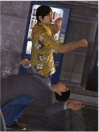

The Drunken Master?
Theme: Revelations
Another revelation!
Some punk got pissed at a drunk man. You'd think the guy would just slug him one and it'd be over, but no. The drunk evaded all of his attacks then finished him with a shoulder thrust!
Coincidence? Can alcohol bring out one's inner mastery? Sounds like I could use a drink...
